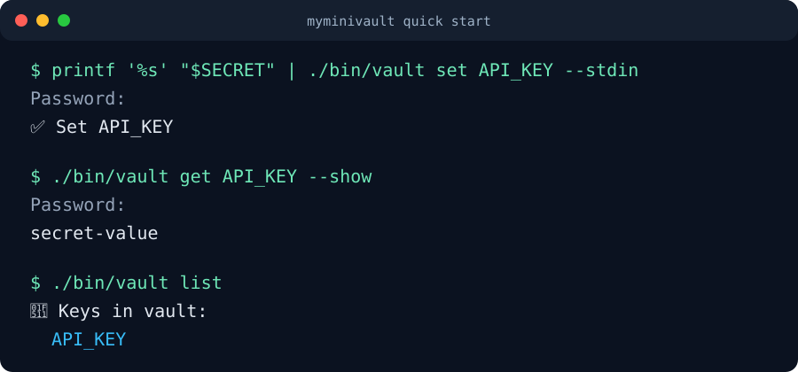
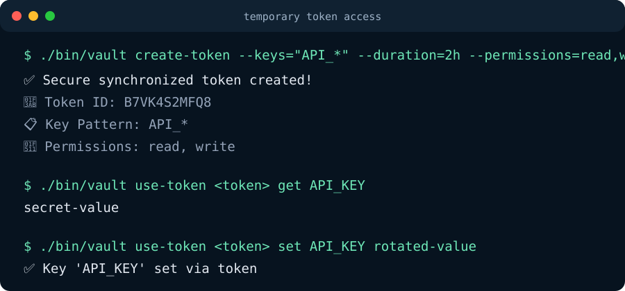
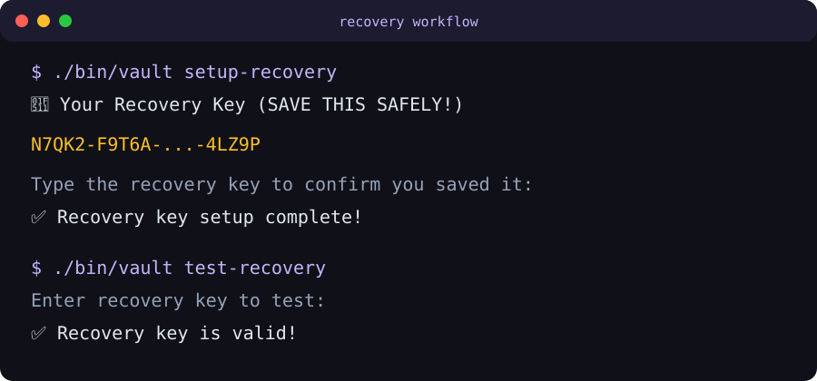

v0.12.x line. It is useful for local workflows and testing, includes
documented encrypted file-format notes and standalone reference decryptors, but it
has not received an external security audit and should not be treated as a
production password manager.
Quick Start
go install github.com/olelbis/myminivault/cmd/vault@latest
vault set API_KEY secret-value
vault get API_KEY --show
vault copy API_KEY
vault doctorDocumentation Map
README
Install paths, command overview, screenshots, runtime files and release assets.
User manual
Full CLI workflows for vault data, recovery, tokens, runtime inspection and safe usage.
Security model
Assets, trust boundaries, threat model, mitigations and residual risks.
Encrypted format
MYMV v2 container layout, KDF metadata, AAD, payload schema and legacy compatibility.
Crypto review scope
Focused review map for encryption, containers, storage, recovery and token vault code.
Review request
Ready-to-share request for focused crypto and file-format review.
Token sync policy
How temporary token writes flow through the shared token vault into the main vault.
Migration policy
Current format compatibility, fixture corpus and future vault migrate planning.
Recovery policy
Recovery-key behavior, recovery snapshot semantics and operational guidance.
Development guide
Local tests, coverage, release workflow and contributor notes.
Coverage notes
Current full and internal package coverage baselines.
Changelog
Release-by-release history and compatibility-preserving bugfix notes.
Feedback
Report bugs, request features, discuss documentation gaps or share real-world usage notes.
What It Does
| Area | Behavior |
|---|---|
| Local vault | AES-256-GCM encrypted key/value storage with scrypt key derivation and authenticated MYMV v2 container metadata. |
| Runtime files | Dedicated ~/.myminivault/ runtime directory with MYMINIVAULT_HOME override. |
| Recovery | Recovery-key setup, validation and password reset through a recovery-encrypted snapshot. |
| Tokens | Temporary scoped tokens with expiry, max-use limits, read/write permissions and JSON output. |
| Safety checks | vault doctor, runtime inspection, migration dry-run preview, rollback warnings, restrictive file permissions, CI coverage gates and reference decryptor fixtures. |
Screenshots



Release Artifacts
- Linux
.debpackages for amd64 and arm64. - Linux
.rpmpackages for amd64 and arm64. - macOS arm64
.pkgpackage. .tar.gzarchives, SPDX SBOMs, SHA-256 checksums and GitHub artifact attestations.
Feedback
Real-world reports are useful while the project is still experimental. Please avoid posting real secrets, vault files, recovery keys or compact tokens.